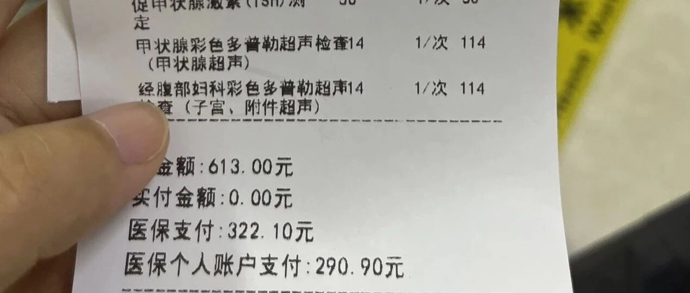

大城市退休的最大好处！
点击关注 秋秋在分享
一起实现财务自由退休
大家好，我是秋秋呀。
已经到北京了，独享高铁商务座，昨天晚上还吃了烤鸭，今天一大早就去做了检查。


我检查了女性高危四件套：
甲状腺➕甲功七项
乳腺彩超
子宫彩超
HPV TCT筛查
怕甲状腺结节，怕乳腺增生，怕子宫肌瘤，怕宫颈癌变。
结果啥事没有。


这样看，生娃比我当时上班，压力还小。
上班赠予我结节，生娃还把我多年痛经治好了。
不过，我不后悔生娃是建立在 ：
一指打无痛，全程单人间，产后不喂奶，不为钱操心，有人一起带娃的基础上。
没有人会不喜欢自己的孩子。
没有上面的基础，我还真挺怕。
说回看病，保持好心情才是最重要的！
定期体检有必要，是能帮我们防患于未然。
像我们年轻人，除了基础的身高体重，男性可以检查这些：

女性除了心电图生化血压，记得做这些：

而这次带父母来北京复查，除了肺部有问题，他们去做肺部CT。
不放心的还可以做肝胆胰脾B超，头部CT和肠胃镜。
妈妈叠加做甲状腺 乳腺彩超和HPV筛查，爸爸叠加做前列腺B超。
这些很大程度上能早早发现癌症。
不要等不舒服再去，毕竟很多癌症是"哑巴疾病"，一开始都没啥明显症状。

基础检查在哪里都能做，治疗确实大城市比较好。
看了小红书的亲身例子：
我侄女发生了车祸，脚被车子碾压。
送到当地的三甲医院，医生说要截肢。我父亲（孩子的爷爷）吓坏了，立马给我打电话。
我一听要截肢，立马从迷糊中清醒。
一个小姑娘，如果被截肢会是什么后果？！
我跟我父亲说一定先不能截肢，想办法带孩子去北京积水潭医院看看。
然后我就开始联系国内的同事，让她帮忙找关系，联系好积水潭医院的医生。
我弟那边买了当天到北京的机票。
孩子第二天就到了积水潭医院。
积水潭医院的医生并没有说要马上截肢，而是先做清创处理，然后再观察情况。
最后孩子的脚保住了。花了大概三千人民币。

我这次体检是着重查了女性几项，医保报销后一共花了400左右，我觉得也不贵。
HPV➕TCT价格贵一点，建议可以先查hpv，这两个也不用每年都做。

另外，这次看病我发现住宿什么的也挺方便，我们定了一个两室一厅，400一晚。
三张大床能做饭能洗衣服，距离医院800米。一家子比住酒店方便。

所以身体健康的情况，每年去大城市检查一次就行。
身体不健康，真的看病，也不要畏惧，还是要好好去治疗。